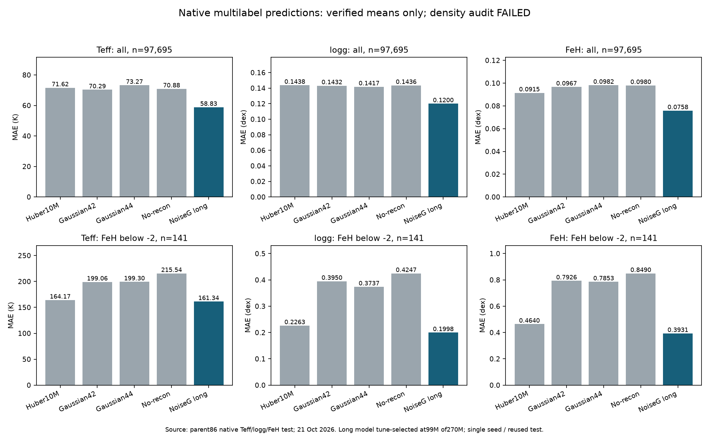
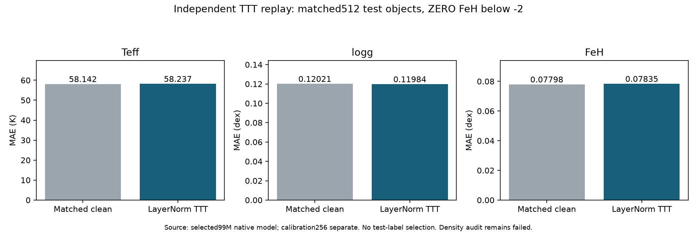
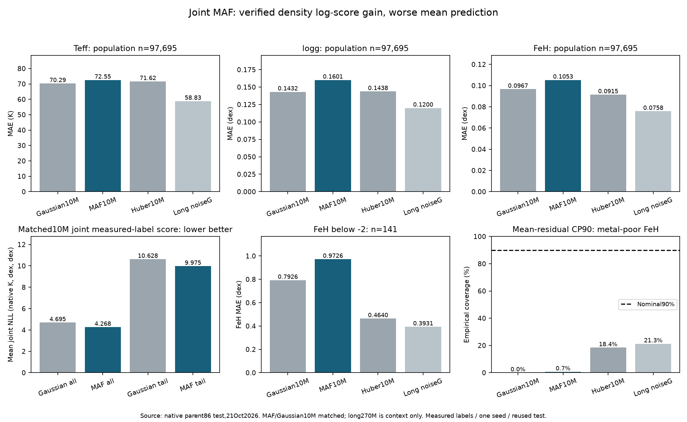
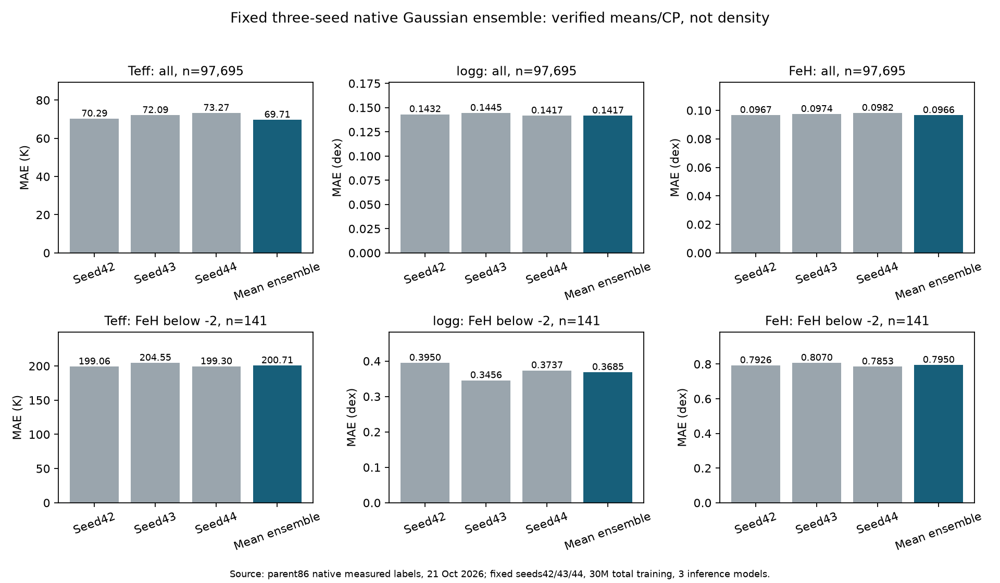
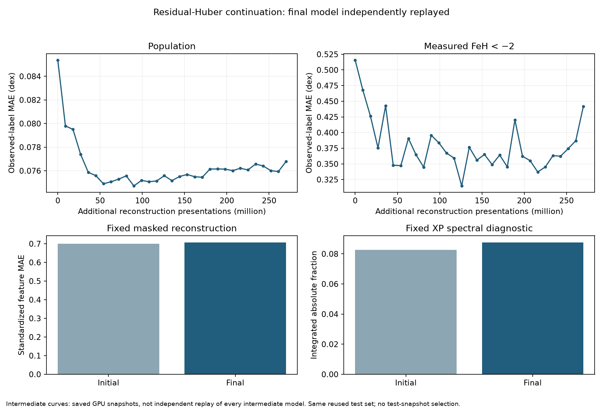
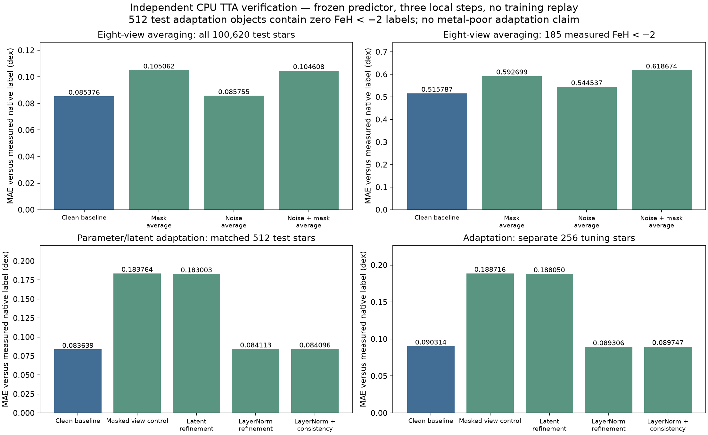

On the separate native test of 97,695 stars (141 below −2 dex), the tuning-selected noise-aware diagonal Gaussian plus reconstruction achieved MAE 58.83 K / 0.11997 dex / 0.07583 dex for Teff / logg / FeH. The verified 10M Huber control gives 71.62 K / 0.14376 dex / 0.09146 dex. The long run trained 270M presentations and reserved tuning selected its 99M checkpoint; this comparison changes budget and objective and does not isolate their effects.
Verification scope: independent native-source inputs, test means/variances, calibration, split-conformal arithmetic, streams, saved-state restoration, decoder-on-saved-targets and per-object TTT checks passed. The separate density/NLL audit FAILED and remains excluded. Other joint-flow/inversion methods are not yet independently ranked; this is not an overall winner declaration.

Nominal 90% marginal coverage for the long model is 88.4% / 89.3% / 88.8% across Teff / logg / FeH. On the 141 metal-poor objects, FeH coverage is only 21.3%; good aggregate coverage does not establish conditional or physical-truth calibration. Joint Bonferroni coverage is 91.9% overall and 29.1% in this tail.
LayerNorm test-time refinement has mixed, tiny changes on its matched 512-object sample: Teff 58.142→58.237 K, logg 0.12021→0.11984 dex, FeH 0.07798→0.07835 dex. These 512 contain zero labels below −2, so no metal-poor adaptation claim is supported. Keep clean prediction primary.

Paired CSV, conditional/survey CSV, report JSON, input hashes, reproducible script and PNG/PDF figures are preserved under multi_gaussian_noise_recon_30e_v1/verified-point-cp-comparison. Native measured-label comparisons, one seed, reused test and unsupervised-overlap limits apply. The separate 150M-unique-star training remains active; this multilabel fit used repeated 9M TRAIN rows.
Verified results and experiment inventory · updated 21 October 2026. Historical single-label test: 100,620 stars; below −2 dex: 185 stars. Lower MAE is better. Families with different parents, inputs or fit objectives are not interchangeable controlled comparisons.
Current programme: matched seeds, later checkpoints, reconstruction protection, XP augmentation, conditional density flows and label-free test-time adaptation are published for GPU screening. All eleven accepted sessions now have completed production manifests. All ten training adaptations now have full independent CPU passes. Test-time averaging and per-object refinement also pass independent CPU verification; paired visual QA finds no improvement over their matched clean baselines. Parent85/86 and pure-mask paired reports are also complete and visually checked. No model replay or training remains active for these accepted screens. The bounded first-attempt batch has finished; ten requests remain ambiguous after CANFAR 503s/timeouts and are being reconciled without retries. The repository ledger is authoritative, and ambiguous requests are never automatically retried. The completed long continuation now passes full independent final-model replay; its separate-budget result appears below.
The three-label masked autoregressive flow now passes independent functional CPU mean, variance, density and conformal checks on 97,695 test plus2,046 calibration stars. The verifier independently implements masked networks, affine transformations, sequential inverses and change-of-variables log-Jacobians; it does not call the production flow helpers. Training streams/Adam and decoder replay on saved targets also pass; original benchmark reconstruction provenance and MAF TTT remain outside this result.
Against the matched parent86 Gaussian10M control, mean joint native-label NLL improves 4.69485→4.26752 per object (natural logs; Teff inK, logg/FeH index units dex; lower is better). In the141-star metal-poor subset it improves10.62769→9.97545. Point MAEs worsen: Teff70.29→72.55K, logg0.14315→0.16015dex, FeH0.09666→0.10528dex; tail FeH0.79260→0.97257dex. Better measured-label density scores do not imply better mean predictions or cured attenuation.

Mean-residual conformal intervals have near90% population coverage but cover only1of141 metal-poor FeH labels for thisMAF. These intervals are calibrated absolute residuals, not flow credible regions. One seed, reused test and noisy native-label limitations remain. The longer noise-aware Gaussian is shown for point-error context only; its density audit still fails and it has a different training budget/objective. No physical-truth or overall-flow-winner claim.
Paired prediction/log-score CSV, conditional/survey CSV, independent report/SHA bindings, runnable reproduction and PNG/PDF preserved under multi_maf_recon_s42_v1/verified-density-point-cp-comparison. Conditional medians or separate point/density heads remain proposals, not tested improvements.
The predeclared equal-weight mean of seeds42/43/44 needs all three checkpoints: 30M total training presentations and three inference models. On the same 97,695 native test objects it gives MAE 69.71 K / 0.14170 dex / 0.09657 dex for Teff / logg / FeH, versus seed42 70.29 K / 0.14315 dex / 0.09666 dex. This is a small observed gain, not evidence of a substantial improvement.
On the 141 FeH-below−2 stars, ensemble FeH MAE is 0.79499 dex; individual members range 0.78532–0.80704 dex. Nominal90% FeH conformal intervals cover zero of these141, although population coverage is89.64%. Averaging these members does not remove their shared tail bias. The long noise-aware/reconstruction model above has better point errors in this comparison, with a different budget/objective.

Independent saved CPU component/source checks were reused; no model replay or new fit. Equal mean/covariance equations and conformal calibration/order invariants checked separately. Seed43 intrinsic-density failure remains retained; no mixture-NLL or physical-truth calibration claim. Report, paired source-ID CSV/NPZ, per-survey CSV, hashes, runnable reproduction and PNG/PDF preserved in native-gaussian-three-seed-point-cp-comparison.
After an additional 270M presentations on the same 9M TRAIN rows, observed-label MAE changed from 0.08537557 to 0.07678052 dex on 100,620 stars; below −2 dex, 0.51578736 to 0.44187004 dex on 185 stars. Fixed reconstruction and spectral diagnostics worsened. The final model passed independent CPU replay; intermediate curves are saved GPU snapshots and were not used to select a test-set checkpoint. Single seed and reused-test limitations apply.

Eight views include the clean input and seven perturbed inputs. The 512-object parameter-adaptation comparison uses its own matched clean baseline; this subset contains zero labels below −2 dex. The separate 256-object tuning set is shown for context, without test-label selection.

MAE in dex against measured native labels, not physical truth. Single seeds; correlated survey/reference systematics and unsupervised overlap remain. Source: independently verified repository reports; historical findings are described separately below.